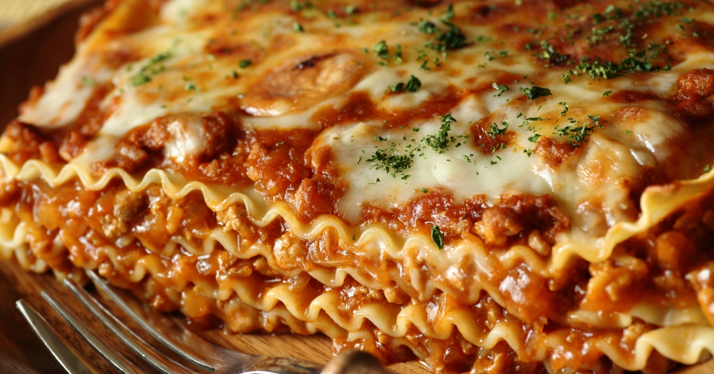

Platillos típicos
| Platillo | Descripción |
|---|---|
| Pizza Margherita | Masa delgada con tomate San Marzano, mozzarella di bufala y albahaca fresca. |
| Pasta Carbonara | Espaguetis con huevo, pecorino romano y guanciale crujiente. |
| Lasagna | Capas de pasta con ragú boloñesa, bechamel y queso gratinado. |
| Risotto ai Funghi | Arroz arborio cremoso con setas y parmesano. |
Ingredientes característicos
| Ingrediente | Uso principal |
|---|---|
| Tomate | Base de salsas, conservas y guisos. |
| Albahaca | Añade frescura, típica en pesto y pizza. |
| Mozzarella | Queso fundente esencial en pizzas y platos horneados. |
| Aceite de oliva | Usado en crudo y cocción por su sabor distintivo. |
Postres populares
| Postre | Descripción |
|---|---|
| Tiramisú | Capas de bizcocho empapadas en café con crema de mascarpone. |
| Panna Cotta | Crema cocida aromatizada y servida con coulis de frutas. |
| Cannoli | Cono crujiente relleno de ricotta endulzada. |